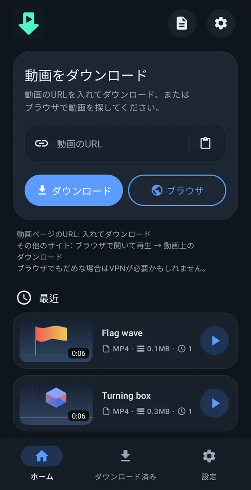
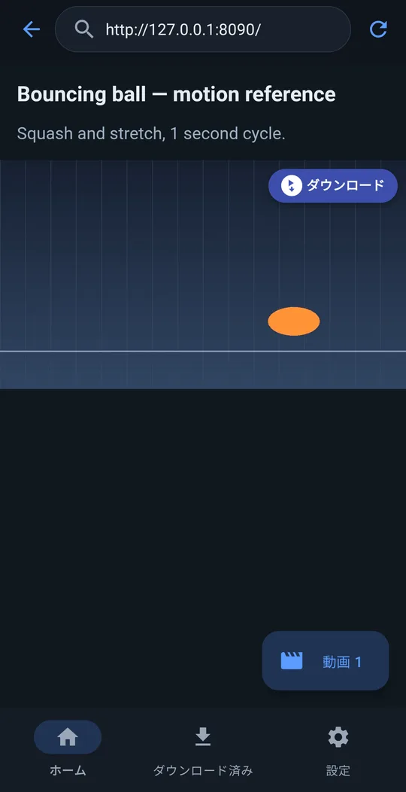
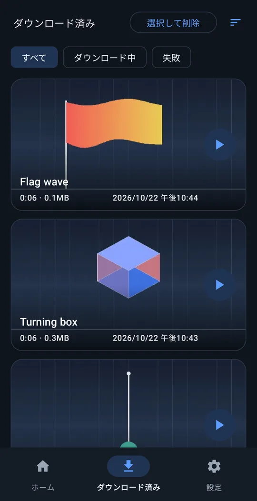
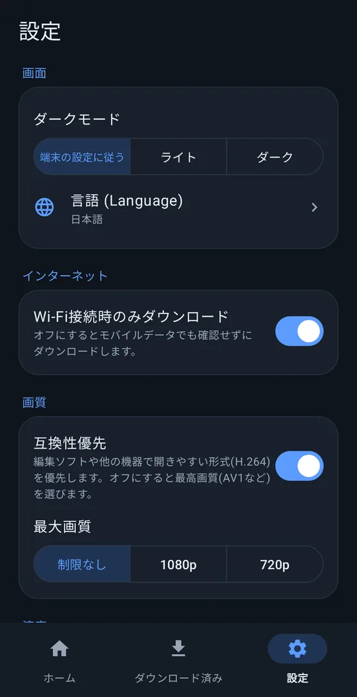

どんな動画もダウンロード！！
動画のリンクを貼るだけで、かんたんにダウンロード。
Android 8.0 以上 · 無料 · 登録不要
使い方




機能
リンクを貼るだけ
よく使われる動画サイトのほとんどに対応。
動画の上に「ダウンロード」ボタン
内蔵ブラウザでは、ページで再生中の動画の上に「ダウンロード」ボタンが出ます。リンクでは取れないサイトでも多くの場合OK。
すぐ編集に使える
Movies/VideoRef に保存。「互換性優先」をオンにすると、編集アプリですぐ開ける形式を選びます。
バックグラウンドで続く
画面を消してもダウンロードを続けます。「Wi-Fi接続時のみダウンロード」や最大画質も選べます。
10言語
English, 한국어, 简体中文, 繁體中文, 日本語, Español, Deutsch, Français, Português (Brasil), Русский。ライト / ダークテーマ。
私たちには何も送られません
登録不要で、開発者には何も送信されません。
インストール
- 上のボタンからインストールファイル（APK）をダウンロードします。
- スマホでダウンロードしたファイルを開きます。
- 確認が出たら、ブラウザやファイルアプリに不明なアプリのインストールを許可して、インストールをタップします。
just downloader を応援する
just downloader は無料です。時間の節約になったなら、ささやかな支援が次のアップデートの力になります。
よくある質問
本当に無料ですか？
はい、完全に無料です。会員登録も試用期間もありません。
情報を送信しますか？
個人情報は送りません。ご自身でエラー報告を送らない限り、開発者には何も届きません。プライバシーポリシー
どのサイトで使えますか？
よく使われる動画サイトの多くはリンクを貼るだけでOKです。だめなときは内蔵ブラウザでページを開き、動画を再生して上の「ダウンロード」をタップしてください。コピー防止がかかった有料配信の動画は保存できません。
困ったときは？
設定 → ヘルプ → 問題を報告 で、アプリのログを添付したメールが support@4dir.net 宛てに作成されます。